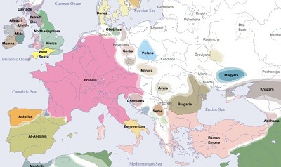

|  | Europa es uno de los seis continentes del mundo y el quinto más extenso. Limita al norte con el océano Ártico, al sur con el mar Mediterráneo, el mar Negro y el mar Caspio, al este con los montes Urales y al oeste con el océano Atlántico. Tiene una superficie aproximada de 10 millones de kilómetros cuadrados, lo que representa el 6,8 % del total de la superficie terrestre del planeta. En Europa se encuentran algunas de las principales potencias económicas y políticas a nivel mundial como Gran Bretaña, Francia y Alemania. Este continente es también sede de algunas de las ciudades más importantes de la historia, y actualmente algunas de las más visitadas de todo el mundo, como Londres y Manchester en Gran Bretaña, Madrid y Barcelona en España, Berlín en Alemania y París en Francia. |
|||
¿Por qué se llama así? El origen del nombre “Europa” no está claro y hay varias teorías al respecto. Una de ellas supone que el nombre proviene del término fenicio ereb, que significa “poniente” u “occidente”, en referencia a la ubicación occidental del continente respecto a Fenicia. Otra teoría cree que el nombre podría estar relacionado con una diosa llamada Europa quien, según la mitología griega, fue secuestrada por Zeus y llevada a la isla de Creta en el mar Mediterráneo. La población total del continente asciende a algo más de 740 millones de habitantes, lo que representa el 9,4 % del total mundial. Los países más poblados son Rusia con 143 millones de habitantes, Turquía con 84,7 millones y Alemania con 84,3 millones.
|
||||